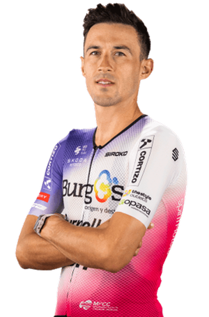

José Manuel Díaz
Datos personales
- José Manuel Díaz Gallego
- 18/01/1995
- España
- BURGOS-BURPELLET-BH
- Dorsal: 195

Datos equipos
- Burgos-Burpellet-BH (2022 - Actualidad)
- Gazprom-RusVelo (2022)
- Team Delko (2020 - 2021)
- Team Vorarlberg Santic (2019)
- Israel Cycling Academy (2017 - 2018)
Temporada 2025
| Dato | Resultado |
|---|---|
| Victorias | 0 |
| Victorias de etapa | 0 |
| Podios | 2 |
| Top 10 | 7 |
| Mejor general | 8 |
| Top 25 | 18 |
Multimedia
Equipo BURGOS-BURPELLET-BH en la Vuelta Ciclista a España 2026.